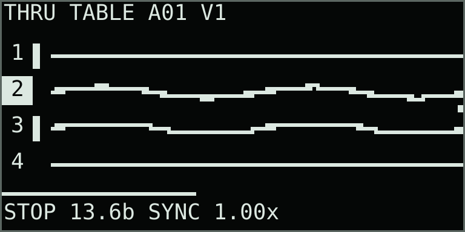
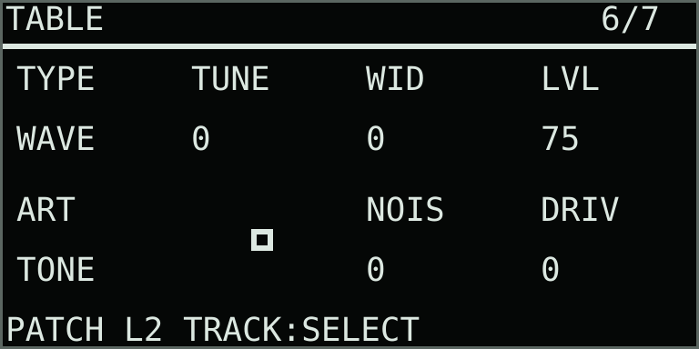
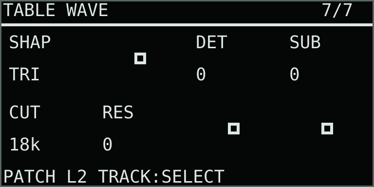
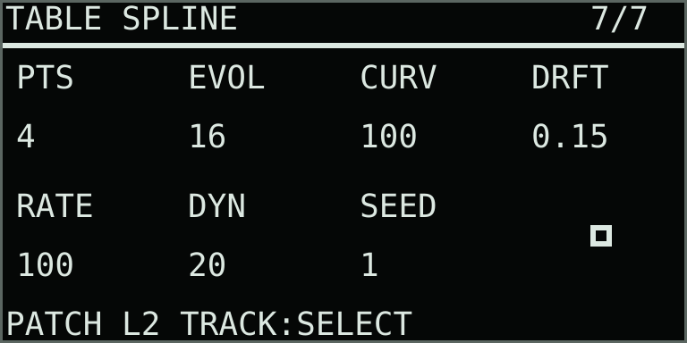
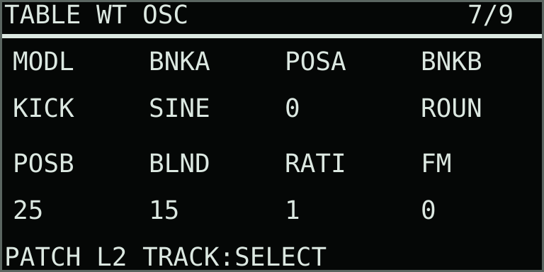
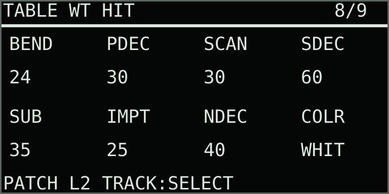
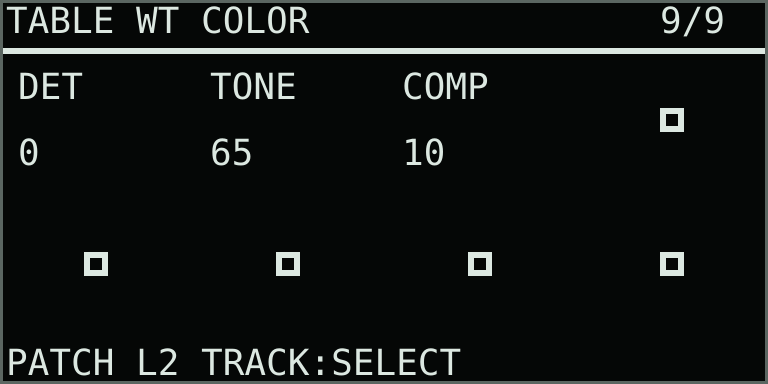

Playback engine 16 of 18
TABLE
Play clean oscillators, evolving spline waveforms and wavetable percussion directly. TABLE replaces the four sample lanes with four synth patches; stack scanning blends the patches while each note keeps its own pitch and motion.
Play and edit four patches
Select TABLE with ALG on Engine. No loaded sample is needed. Press a Track button to edit that physical patch, then choose TYPE on TABLE: WAVE, SPLINE or WT DRUM. Each patch remembers all three variants’ settings. Only the active variant’s pages appear. The footer identifies the patch being edited; selecting it does not jump a sounding voice to that lane.
Notes set oscillator pitch. TUNE transposes it in semitones. Use the existing Amp Envelope, Mono/Legato, scales, latch, Engine List, output mixer and effects. ART TONE sustains while held; HIT adds an internal decay that starts at note onset. A patch reached later by scanning joins at the note’s current age rather than starting a fresh hit. WT DRUM starts from HIT.
| Mode | Patch lanes | Playback |
|---|---|---|
| Single | 1–4 | Eight note voices scan four patches. |
| Split | A: 1–2; B: 3–4 | Four voices per part scan its two patches. |
| Shared Dual | 1–4 per part | A and B each have their own four-patch program and four voices. |
| Quad / Sequence | One physical patch per part | Two voices per part; no stack scanning. Sequence NOTE, VEL and DUR apply; sample POS does not. Hold a Sequence trig and browse TABLE pages to add independent sound locks for that note; see Sequence sound locks. |
| Layers | 1–4 | Eight engine voices scan four patches beside the FX surface. |
| Bank | A: 1–4 | A scans four patches; Bank B retains its sixteen sample pads. |
STAK, RATE, Stack Path, pressure and stack hold keep their familiar scan roles where more than one patch is available. Source POS, FLD, SPD and JOIN show squares because TABLE does not read sample windows. Stored audio lanes are retained if you switch back to a sample engine.
Live scope

A rising zero crossing stabilizes the latest short audio window. This is an oscilloscope, not a stored waveform or time position in a sample. Polyphonic notes sum in each patch trace and can make it move. Small stack markers identify each note’s lane blend. The selected lane number highlights the patch being edited. In Shared Dual, the traces follow the focused part.
Parameter pages
Knobs 1–4 are the top row; 5–8 the bottom row. Blank cells show reserved squares. Existing shared pages remain in their normal groups. These pages edit the selected Track’s patch.
TABLE

| Knob | Display | Range | What it controls |
|---|---|---|---|
| 1 | TYPE | WAVE / SPLINE / WT DRUM | Variant chooses Wave, Spline or WT Drum. This changes available detail pages; it does not load a sample. |
| 2 | TUNE | -48–48 | Transpose relative to the played MIDI note, in semitones. Keyboard pitch remains independent of stack scan. |
| 3 | WID | 0–100 | Stereo separation of oscillator and noise components. Zero is mono. |
| 4 | LVL | 0–100 | Generator level before the note envelope, mixer and effects. It is a live gain, not offline peak normalization. |
| 5 | ART | TONE / HIT | Tone sustains; Hit adds the patch’s internal decay. The shared Amp Envelope still controls the note. |
| 6 | DEC | 10–12000 | Internal Hit decay in milliseconds; unavailable in Tone. Reaching a patch later in a held note does not retrigger it. |
| 7 | NOIS | 0–100 | Noise mixed with the tonal source. In WT Drum its envelope and color have additional controls. |
| 8 | DRIV | 0–100 | Smoothed saturation before DC removal and output level. Adds harmonics; high settings can deliberately roughen the sound. |
TABLE WAVE

| Knob | Display | Range | What it controls |
|---|---|---|---|
| 1 | SHAP | SINE / TRI / SAW / SQR | Sine, triangle, saw or square/pulse oscillator. |
| 2 | PW | 5–95 | Pulse duty cycle. Available only for square/pulse. |
| 3 | DET | 0–50 | Detuning between the oscillator channels in cents, scaled by stereo Width. |
| 4 | SUB | 0–100 | Sine sub-oscillator one octave below the played pitch. |
| 5 | CUT | 20–20000 | Low-pass filter frequency. Logarithmic dial spacing preserves low-frequency precision. |
| 6 | RES | 0–95 | Filter resonance. High values emphasize the cutoff region. |
TABLE SPLINE

| Knob | Display | Range | What it controls |
|---|---|---|---|
| 1 | PTS | 1–32 | Interpolated point density of the prepared spline shapes. Larger values give more detailed cycles. |
| 2 | EVOL | 1–4096 | Cycles used to move between prepared spline shapes. Low values evolve quickly; high values settle slowly. |
| 3 | CURV | 0–100 | Blend from straight segments to smoothly curved spline segments. |
| 4 | DRFT | 0–12 | Bounded pitch wander, in semitones. |
| 5 | RATE | 1–1000 | Time between pitch-wander destinations, in milliseconds. |
| 6 | DYN | 0–100 | Amount of changing spline amplitude. |
| 7 | SEED | 0–65535 | Repeatable spline identity. Live notes still receive their own variation stream; recorded note identities repeat. |
TABLE WT OSC

| Knob | Display | Range | What it controls |
|---|---|---|---|
| 1 | MODL | KICK / SNARE / TOM / HAT / CLAP / METAL | Percussion timbre starting point. Resets the WT sound controls, not TUNE; tune low for a bass drum. It is not an engine change. |
| 2 | BNKA | SINE / ROUND / SAW / ODD / METAL / FORM / HOLLOW / GLASS | First oscillator wavetable family. |
| 3 | POSA | 0–100 | Position inside the first family. |
| 4 | BNKB | SINE / ROUND / SAW / ODD / METAL / FORM / HOLLOW / GLASS | Second oscillator wavetable family. Repeated families are allowed. |
| 5 | POSB | 0–100 | Position inside the second family. |
| 6 | BLND | 0–100 | Mix between the two wavetable oscillators. |
| 7 | RATI | 0.125–16 | Second oscillator frequency ratio relative to the played pitch. |
| 8 | FM | 0–100 | Phase-modulation amount from the second oscillator into the first. |
TABLE WT HIT

| Knob | Display | Range | What it controls |
|---|---|---|---|
| 1 | BEND | -48–48 | Initial pitch sweep in semitones; settles toward the played note plus TUNE. |
| 2 | PDEC | 1–2000 | Pitch sweep settling time in milliseconds. |
| 3 | SCAN | -100–100 | Signed excursion added to both wavetable positions at onset. |
| 4 | SDEC | 1–4000 | Wavetable excursion settling time in milliseconds. |
| 5 | SUB | 0–100 | Sub-oscillator amount, one octave below the played pitch. |
| 6 | IMPT | 0–100 | Brief noise excitation at note onset. |
| 7 | NDEC | 1–4000 | WT noise decay in milliseconds. Available only when NOIS is above zero. |
| 8 | COLR | WHITE / PINK / HP / METAL | White, pink, high-pass or metallic noise color. Available only with noise. |
TABLE WT COLOR

| Knob | Display | Range | What it controls |
|---|---|---|---|
| 1 | DET | 0–50 | Stereo wavetable oscillator detuning, in cents, scaled by Width. |
| 2 | TONE | 0–100 | WT low-pass brightness. |
| 3 | COMP | 0–100 | Soft peak-dependent compression within the patch. Output still passes through the existing shared gain staging. |
Wave uses band-limited oscillators. Spline interpolates a prepared palette of random shapes and evolves continuously; it is a live adaptation rather than an exact rebuild of every older offline Spline file. WT Drum uses the wavetable families from the sample generator, with live envelopes and saturation instead of whole-file normalization.
Engine List
TABLE can occupy any Engine List slot alongside sample engines. Each note receives the chosen engine and keeps its own pitch and stack path. Repeated TABLE slots use the same part’s four-patch program; they do not store independent synth presets. TYPE belongs to each physical patch, so one TABLE program can already scan between Wave, Spline and WT Drum patches. A list entry’s octave and pan variations still apply.
Save, automate and resample
All four patches save with clips and portable projects. Clip recording captures patch changes with their actual part and physical lane, so browsing another patch does not redirect earlier gestures. MIDI and Custom CC use the selected Track as the patch editor. Continuous TABLE LFO targets apply to all matching patches of the assigned part, each around its own base; discrete choices remain manual.
To make a sample from TABLE, record MIX or PT A/PT B using the existing audio recorder, or capture it into Bank. Saved recordings appear in the recording library as usual. The offline Synth menu retains its twelve rendering and processing types; Wave, Spline and WT Drum now live here. Older generated WAVs still play normally. Opening one of their saved recipes transfers base sound settings to the selected TABLE patch; offline curves, modulation and file envelopes do not become performance automation.